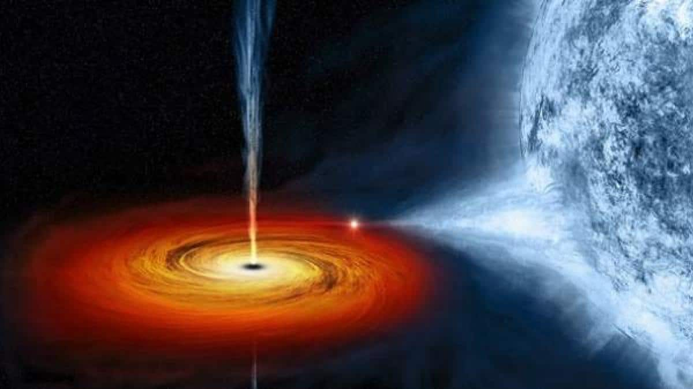

¿Cómo se forman los agujeros negros? La mayoría de los agujeros negros son formados por restos condensados de una estrella masiva. En otras palabras: se trata de lo que queda después de la muerte de una estrella grande, con una masa de al menos tres estrellas similares al Sol.
